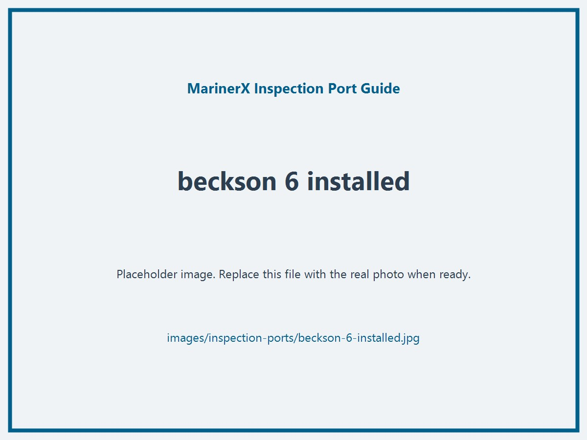
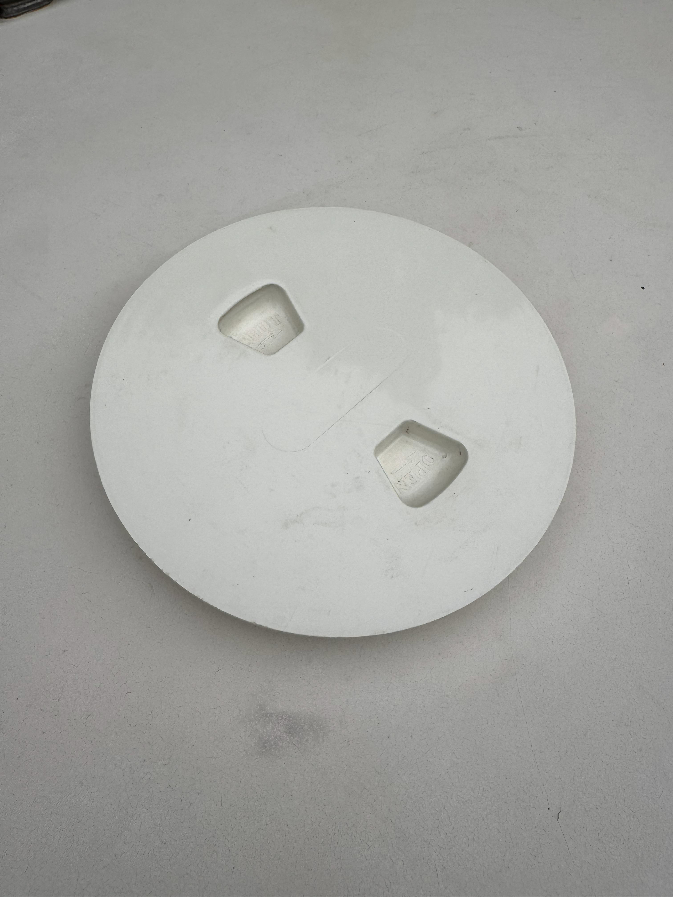
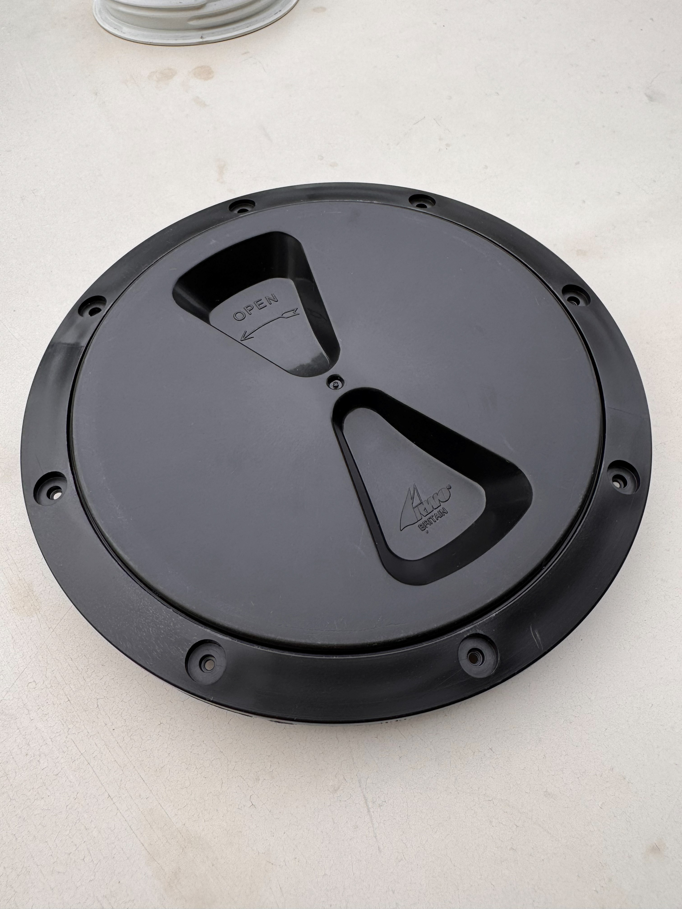
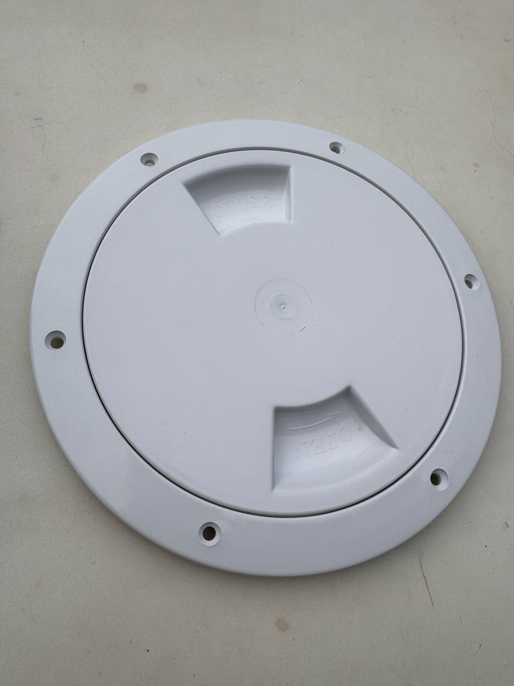
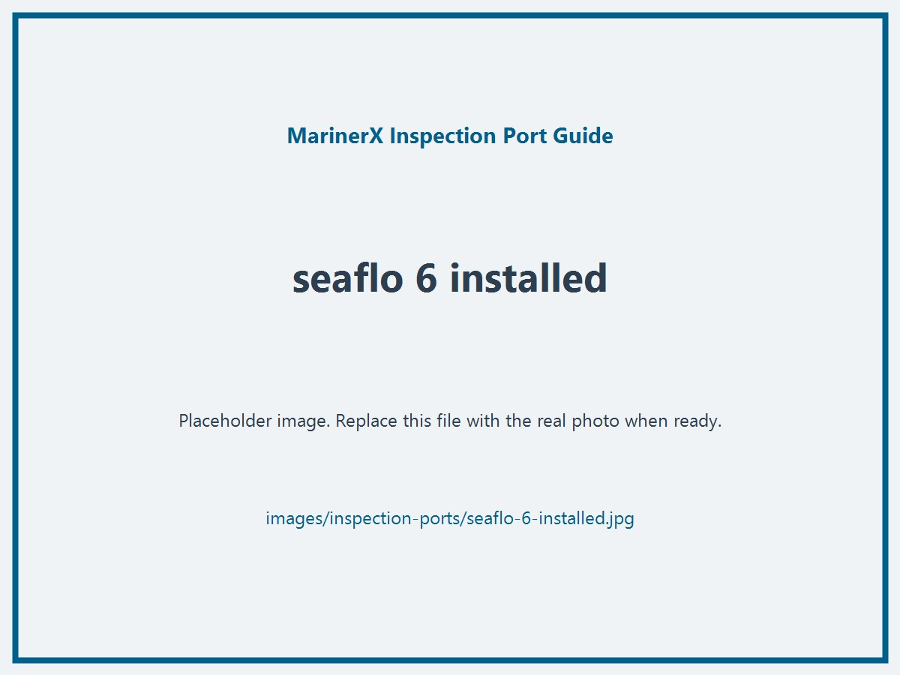
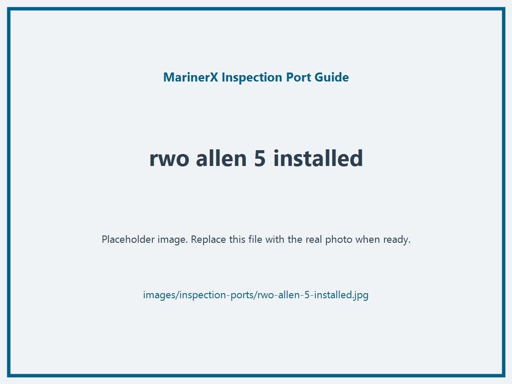
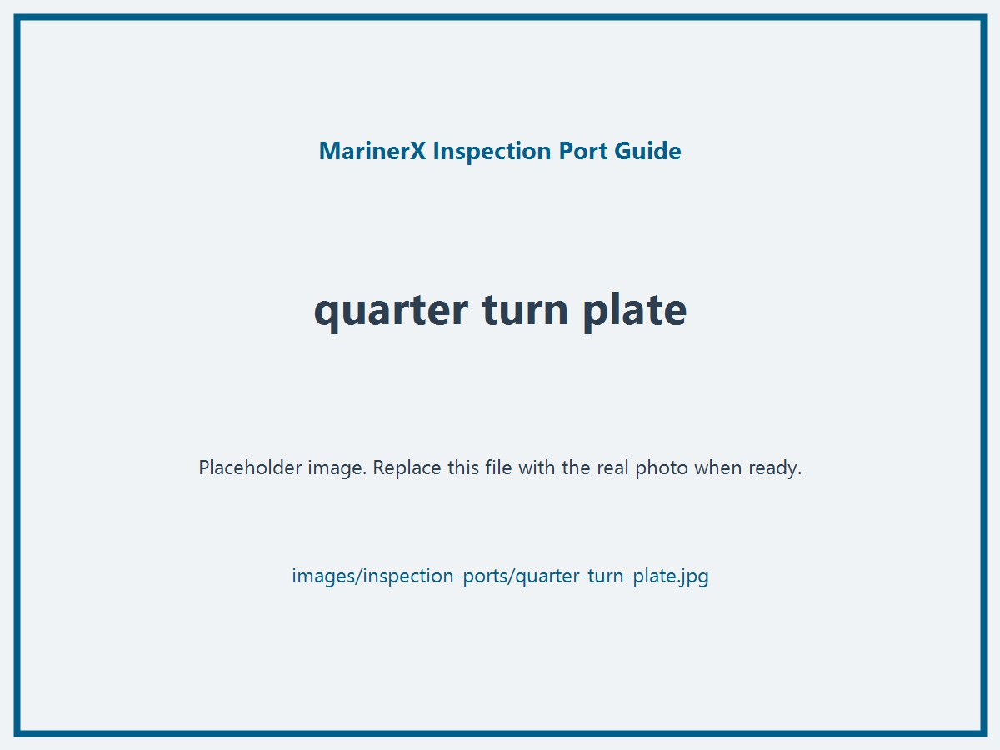
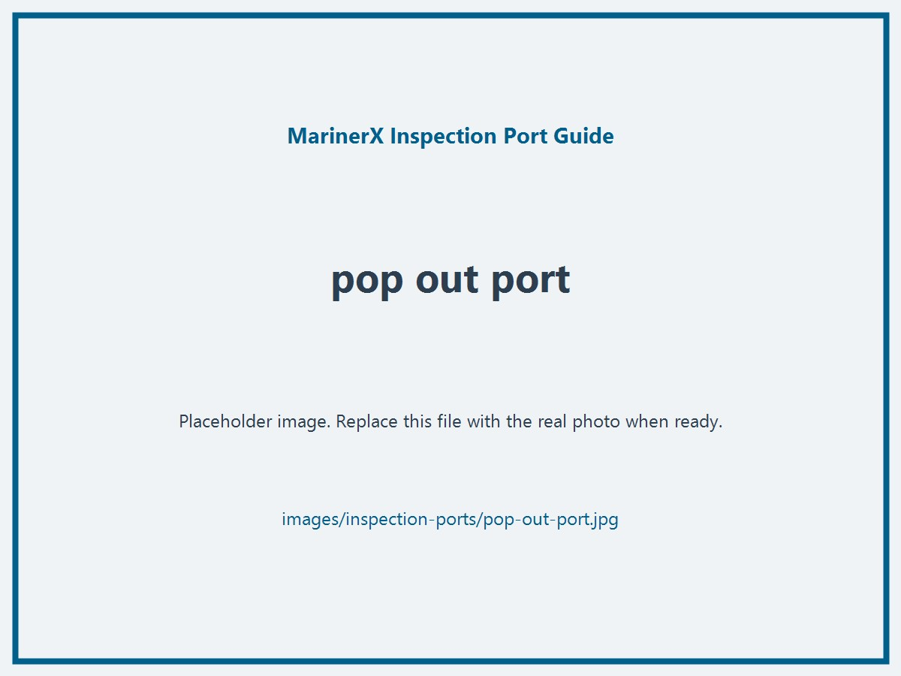

Why identification matters
Each brand uses its own thread form, cover geometry, and dimensions. The correct MarinerX base unit or adapter only works when those details line up.
Identify your deck plate quickly, confirm compatibility clearly, and avoid ordering the wrong fit.
This guide is meant to remove fitment anxiety. Correct hull-dryer fit depends on matching the port's nominal opening, thread geometry, and lock style, not just the outer ring diameter.
The supported combinations below cover roughly 80% of the common screw-in inspection ports and deck plates we see. If your port does not match clearly, do not guess, send us photos.
Each brand uses its own thread form, cover geometry, and dimensions. The correct MarinerX base unit or adapter only works when those details line up.
If you want the shortest path, use this order. It narrows the field faster than browsing photos at random and keeps the measurement logic consistent with how manufacturers publish dimensions.
Start with the clear opening or inside thread area: usually 4, 5, 6, or 8 inches, not the outside flange.
Screw-in has full threads. Quarter-turn uses cam tabs. Pop-out has no threads.
Check thread pitch, grip shape, molded brand text, and lid color.
Find your port in the matrix below, then use that row to choose the correct Hull Dryer and adapter.
Nominal size, outside rim diameter, and cutout size are not the same thing. For compatibility, start with the clear opening and thread pattern, then use the cutout and outside-rim numbers as confidence checks in the brand sections below.
This table is designed to reduce decision fatigue. If your port looks close but not exact, stop and contact us with photos before ordering.
Showing 10 rows. Use diameter, lock type, brand family, and support status to narrow the list.
| Photo |
Port type / brand
|
Diameter
|
Lock type
|
MarinerX fit
|
Adapter |
Guide section
|
|---|---|---|---|---|---|---|
|  | Beckson / West Marine screw-in inspection port | 6 in | Screw-in | Standard | None | Jump |
|  | Beckson / West Marine screw-in inspection port | 4 in | Screw-in | Mini | None | Jump |
 | Beckson / West Marine screw-in inspection port | 8 in | Screw-in | Standard | 8 in Beckson / West Marine adapter | Jump |
|  | RWO / Allen screw-in inspection port | 6 in | Screw-in | Standard | 6 in RWO adapter or 6 in Allen adapter | Jump |
|  | Sea-Dog Line screw-in inspection port | 6 in | Screw-in | Standard | 6 in Sea-Dog adapter | Jump |
|  | Seaflo screw-in inspection port | 6 in | Screw-in | Standard | 6 in Seaflo adapter | Jump |
|  | RWO / Allen screw-in inspection port | 5 in | Screw-in | Mini | 5 in RWO adapter or 5 in Allen adapter | Jump |
 | RWO / Allen screw-in inspection port | 4 in | Screw-in | Mini | 4 in RWO adapter or 4 in Allen adapter | Jump |
|  | Quarter-turn / cam-lock inspection port | Usually 6 in | Quarter-turn | Not currently supported | None | Jump |
|  | Pop-out / snap-in inspection port | Varies | Pop-out / snap-in | Not currently supported | None | Jump |
Quick rule: Standard is the base unit for supported 6-inch and 8-inch screw-in ports. Mini is the base unit for supported 4-inch and 5-inch screw-in ports.
Each section highlights the visual cues that matter most so you can identify the inspection port you have.
Usually the easiest match: a common white or beige screw-out plate with Beckson's coarse buttress thread, designed to resist cross-threading. Official Beckson dimensions for the 6-inch plate are 6-inch opening, 8-1/8-inch outside diameter, and 6-1/2-inch cutout.
images/inspection-ports/beckson-6-plate.jpg
images/inspection-ports/beckson-6-thread.jpgimages/inspection-ports/beckson-6-installed.jpgThis is the smaller Beckson family pattern and the direct-fit match for the Hull Dryer Mini. Beckson lists the 4-inch plate at roughly 5-7/8 inches outside diameter with a 4-1/2-inch cutout, so measure the clear opening rather than the flange.
images/inspection-ports/beckson-4-plate.jpgimages/inspection-ports/beckson-4-thread.jpgimages/inspection-ports/beckson-4-installed.jpgThis larger Beckson-family port keeps the same thread language as the smaller Beckson plates, but the dimensions step up to about 7-5/8-inch opening, 10-inch outside diameter, and 8-1/2-inch cutout. It needs the larger Beckson / West Marine adapter for a secure Standard Hull Dryer fit.
images/inspection-ports/beckson-8-plate.jpgimages/inspection-ports/beckson-8-thread.jpgimages/inspection-ports/beckson-8-installed.jpgThese ports are commonly identified by a finer thread pattern than Beckson and often show darker rings or molded brand markings. RWO's 150 mm hatch family and Allen's larger hatch family both land in this general size class, so confirm the thread form and model family before choosing the adapter.
images/inspection-ports/rwo-allen-6-plate.jpg
images/inspection-ports/rwo-allen-6-thread.jpgimages/inspection-ports/rwo-allen-6-installed.jpgSea-Dog's supported screw-out pattern typically shows a chunkier thread form than RWO / Allen and a different lid geometry than Beckson. Sea-Dog publishes its larger screw-out plate at about 6-1/2-inch opening, 8-1/8-inch outside rim, and 7-3/8-inch overall dimension. The important distinction is that this supported version must be true screw-in, not quarter-turn.
images/inspection-ports/sea-dog-6-plate.jpgimages/inspection-ports/sea-dog-6-thread.jpgimages/inspection-ports/sea-dog-6-installed.jpgSeaflo lids often make identification easier because the brand is molded into the plastic. Thread shape and lid geometry still matter, but visible Seaflo branding is a strong clue when size also matches. Measure the opening carefully because budget screw-in plates are often described by nominal size even when flange and cutout numbers differ from Beckson.
images/inspection-ports/seaflo-6-plate.jpgimages/inspection-ports/seaflo-6-thread.jpgimages/inspection-ports/seaflo-6-installed.jpgThe 5-inch RWO / Allen family uses the same identification logic as the 6-inch version, but it routes to the Mini base unit instead of the Standard. RWO's 125 mm hatch family and Allen's medium-size hatches typically land here after you confirm the finer thread form.
images/inspection-ports/rwo-allen-5-plate.jpgimages/inspection-ports/rwo-allen-5-thread.jpgimages/inspection-ports/rwo-allen-5-installed.jpgThis smaller RWO / Allen pattern also uses the Mini base unit. It can look close to a Beckson 4-inch port at first glance, so confirming the finer thread profile and brand cues matters more than nominal naming alone.
images/inspection-ports/rwo-allen-4-plate.jpgimages/inspection-ports/rwo-allen-4-thread.jpgimages/inspection-ports/rwo-allen-4-installed.jpgIf your port uses a cam-lock, quarter-turn latch, pry-out lid, or pop-out / snap-in retention instead of full threads, it is not currently supported. That boundary is intentional.
images/inspection-ports/quarter-turn-plate.jpgimages/inspection-ports/pop-out-port.jpgimages/inspection-ports/unsupported-closeup.jpgThe dimensions and type descriptions above are summarized from manufacturer product pages and catalog listings. They are useful for narrowing a match, but exact model variations still exist, so measure your own port if the fit is critical.
The correct next step should feel straightforward. If your inspection port is listed above, choose the matching base unit and then the adapter noted in that section, if required.
Base unit for supported 6-inch and 8-inch screw-in inspection ports. Direct fit for Beckson / West Marine 6-inch ports.
Base unit for supported 4-inch and 5-inch screw-in inspection ports. Direct fit for Beckson / West Marine 4-inch ports.
If your port is close but not exact, send us clear photos of the plate, thread or lock geometry, and the installed ring before ordering.
Start with nominal size, then determine whether it is screw-in, quarter-turn, or pop-out, then compare the thread shape and molded brand cues. If you still have two plausible matches, send photos before ordering.
Screw-in ports use continuous threads and several turns to lock. Quarter-turn ports use cam tabs and a short twist. Pop-out or snap-in ports rely on latch tabs or a snap fit rather than full threads.
Usually not. Nominal diameter alone is not enough because thread pitch, lock geometry, and sealing surfaces vary by brand and port family. That is why the guide calls out both size and brand cues.
Do not assume compatibility. Those types are not currently supported because secure engagement and airflow control are different. Send us photos if you want us to review it, or use the waitlist placeholder above if you add one later.
Use the nominal lid opening size, typically 4 inches, 5 inches, 6 inches, or 8 inches. Avoid measuring the outer flange because flange diameter varies and can make a supported port look larger than it really is.